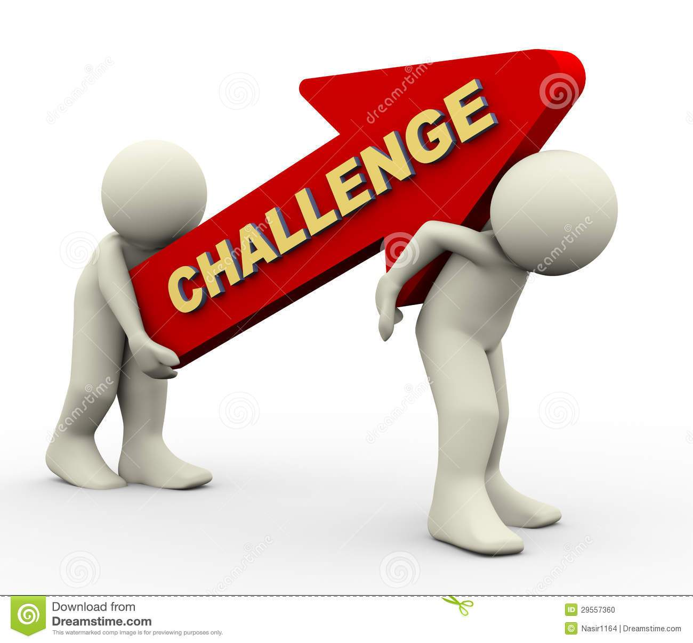

Home | SDG 12 | SDG Challenges | SDG Actions | Tech for SDG | My SDG Impart | About me | Coder Series |

Here are the things the goal is going through
The reason for what challenges the goal is going through
The challenge this goal is going through is that people might not be doing this for different reasons. some people might not be doing this cause maybe they might not care. Or maybe they might be struggling to do that.people might find difficult ecspecially when there are bad people around the world who are trying to stop people from doing that. Also there are some other things that this goal is going through. people are also wasting a lot of food that's why most people in the world are struggling to get food. There are also several bad people in the world who are trying to waste even more food. So that is a lot of struggle that the goal is really going through. So that's why we should make sure that everyone in the world should stop wasting food.
Coder Series Website